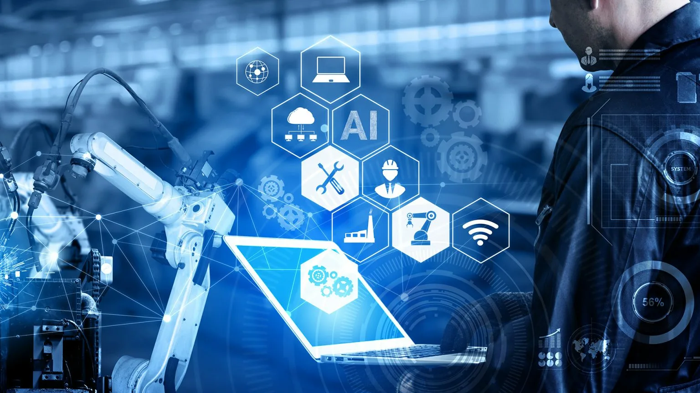

О проекте
Проект автоматизации бизнес-процессов университета 2ГИС — это студенческая инициатива, цель которой — создать удобные, безопасные и эффективные цифровые инструменты для сотрудников и студентов. Мы стремимся сделать внутренние процессы прозрачными и современными.
Цели проекта
- Автоматизация ключевых внутренних процессов университета.
- Сокращение времени выполнения рутинных задач.
- Повышение удобства и доступности сервисов для сотрудников и студентов.
- Создание централизованных инструментов для коммуникации и аналитики.
Что мы разрабатываем
- Систему для управления заявками и документами.
- Панель аналитики для отслеживания процессов.
- Интеграции с существующими корпоративными сервисами.
- Веб- и мобильные версии приложений для университета.
Основные особенности
- Прозрачность процессов: доступ к информации в реальном времени.
- Безопасность: защита данных и контроль доступа.
- Удобный интерфейс: интуитивная навигация и минимализм.
- Масштабируемость: возможность добавлять новые модули.
Как работает команда
- Совместная разработка с преподавателями и экспертами.
- Использование современных технологий и практик.
- Регулярное тестирование на удобство и безопасность.
- Учёт обратной связи студентов и сотрудников.
Почему это важно
Для студентов — это уникальный шанс участвовать в реальном проекте и прокачать навыки. Для сотрудников — удобные сервисы, которые экономят время. Для университета — внедрение инноваций и повышение качества внутренних процессов.
Взгляд в будущее
- Расширение интеграций с другими системами.
- Разработка дополнительных модулей аналитики.
- Улучшение производительности и безопасности.
- Мобильные приложения с расширенным функционалом.